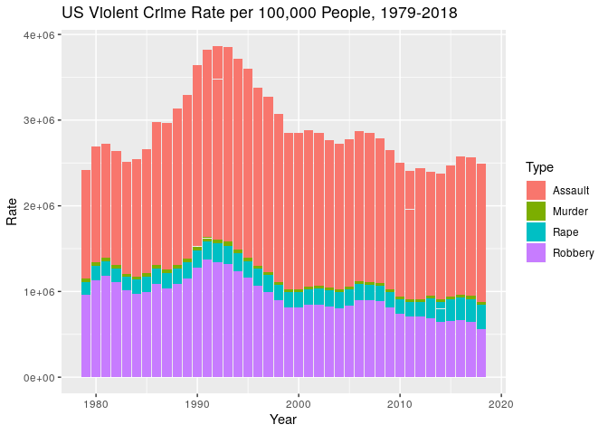
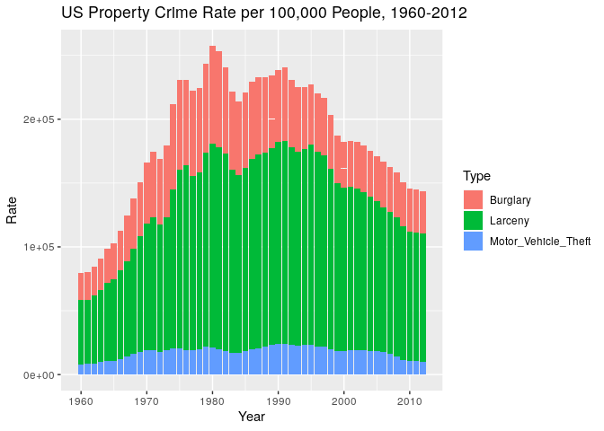

US FBI Crime Estimates
Brian High
12/20/2015
Explore US state crime data from the the US DOJ, FBI UCR. Plot property crime and violent crime for the nation and by state. Use motion charts to allow dynamic visualization of variables changing over time.
Data Sources
United States Department of Justice, Federal Bureau of Investigation. (September 2015). Crime in the United States, 2014. Retrieved December 20, 2015, from UCRDATATOOL.gov.
Link to the form which can be used to select data for download as CSV: http://www.ucrdatatool.gov/Search/Crime/State/StatebyState.cfm
Link to the FBI UCR website with more informatoun about this source: https://www.fbi.gov/about-us/cjis/ucr/
Data include estimates
The United States Department of Justice says:
“National or state offense totals are based on data from all reporting agencies and estimates for unreported areas.”
From: UCRDATATOOL.gov
Data are not entirely comparable
- Changes in reporting from year to year, etc., make comparisons problematic.
- See numerous notes in results page (or CSV) from UCRDATATOOL.gov.
Caution against ranking
The United States Department of Justice says:
“Many entities—news media, tourism agencies, and other groups with an interest in crime in our Nation—use figures from the Uniform Crime Reporting (UCR) Program to compile rankings of cities and counties. These rankings, however, are merely a quick choice made by the data user; they provide no insight into the many variables that mold the crime in a particular town, city, county, state, region, or other jurisdiction. Consequently, these rankings lead to simplistic and/or incomplete analyses that often create misleading perceptions adversely affecting cities and counties, along with their residents.”
Configure document rendering
Set knitr options for nicer rendering this document.
library(knitr)
opts_chunk$set(tidy=FALSE, cache=TRUE, error=TRUE)User-defined functions
Load Packages (function definition)
Get and load required R packages.
load_packages <- function(pkgs){
# Load the required R packages.
for (pkg in pkgs){
if (! suppressWarnings(require(pkg, character.only=TRUE)) ) {
install.packages(pkg,
repos="http://cran.fhcrc.org", dependencies=TRUE)
if (! suppressWarnings(require(pkg, character.only=TRUE)) ) {
stop(paste0(c("Can't load package: ", pkg, "!"), collapse=""))
}
}
}
}Download Data (function definition)
Download CSV from DOJ UCR using RCurl’s postForm().
download_data <- function(output.file, url, referer, user.agent, ystart, yend) {
# To get the CSV we must first fill out the form. Use postForm() to
# supply the paramters to request all data for all states. The form
# also requires a 'user agent' string and a 'referer' [sic].
# This information may be retrieved using, e.g., Chrome Developer Tools.
result.string <- postForm(url,
StateId=52,StateId=1,StateId=2,StateId=3,StateId=4,StateId=5,
StateId=6,StateId=7,StateId=8,StateId=9,StateId=10,StateId=11,
StateId=12,StateId=13,StateId=14,StateId=15,StateId=16,
StateId=17,StateId=18,StateId=19,StateId=20,StateId=21,
StateId=22,StateId=23,StateId=24,StateId=25,StateId=26,
StateId=27,StateId=28,StateId=29,StateId=30,StateId=31,
StateId=32,StateId=33,StateId=34,StateId=35,StateId=36,
StateId=37,StateId=38,StateId=39,StateId=40,StateId=41,
StateId=42,StateId=43,StateId=44,StateId=45,StateId=46,
StateId=47,StateId=48,StateId=49,StateId=50,StateId=51,
DataType=1,DataType=2,DataType=3,DataType=4,YearStart=ystart,
YearEnd=yend,NextPage='Get+Table',
.opts = curlOptions(
referer = referer,
verbose = TRUE,
header = TRUE,
followLocation = TRUE,
useragent = user.agent
)
)
sink(output.file)
cat(result.string)
sink()
}Read State Data (function definition)
Get crime data for one state from the DOJ/FBI file.
read_state_data <- function(state, datafile, datalines) {
# Calculate the start line for each state, 2 rows after state name appears.
line.start <- grep(state, datalines)
skip <- line.start[1] + 2
# End line for state is first blank line after state data. This method
# allows for state data of variable number of years (rows).
line.end <- grep("^$", datalines[skip:length(datalines)])
n <- line.end[1] - 2
# Get column names and clean them up
header <- strsplit(datalines[skip], split=",")
header <- gsub(pattern = "[ -]", replacement = "_", x = header[[1]])
state.data <- read.table(datafile, header=FALSE, sep = ",", skip = skip,
nrows = n, stringsAsFactors = FALSE)
# Add a column for state name so this will be retained as data is combined.
state.data$State <- rep(state, times = nrow(state.data))
# Assign column names.
names(state.data) <- c(header, "State", recursive = TRUE)
# Convert column names to lower case.
names(state.data) <- tolower(names(state.data))
return(state.data)
}Get Data (function definition)
Get crime data from the CSV file made using DOJ UCR tool.
get_data <- function(datafile) {
# Tidy the CSV, as it has embedded state-name header rows we need to skip.
states <- c(state.name, "United States-Total")
datalines <- readLines(datafile, warn = FALSE)
st.data <- do.call("rbind",
lapply(states, function(x)
read_state_data(x, datafile, datalines)))
return(st.data)
}Load packages
Load the R packages you will need, installing any that you are missing.
# Load packages
load_packages(c("datasets", "stringr", "tidyr", "ggplot2", "googleVis",
"R.utils", "dplyr"))Data Management
Prepare the data folder
Create the data folder if it does not already exist.
# Create the data folder if needed.
datadir <- "data/doj_ucr"
dir.create(file.path(datadir), showWarnings = FALSE, recursive = TRUE)Load the crime data
If you have the tidied data file, use that, or if not, use the original data file. Failing that, download the data from the DOJ and tidy the data.
# Load the crime data into a single data frame.
tidydatafile <- paste(datadir, "us-crime-by-state.csv", sep="/")
if (file.exists(tidydatafile) == TRUE) {
# Read the tidy data file into a data frame.
us.crime <- read.csv(tidydatafile)
} else {
datafile <- paste(datadir, "CrimeStatebyState.csv", sep="/")
if (file.exists(datafile) == FALSE) {
# If you don't have the original CSV then download it from DOJ/FBI.
url.path <- "http://www.ucrdatatool.gov/Search/Crime/State"
csv.path <- "DownCrimeStatebyState.cfm/CrimeStatebyState.csv"
csv.url <- paste(url.path, csv.path, sep="/")
referer <- paste(url.path, "StatebyState.cfm", sep="/")
agent <- 'Mozilla/5.0 Chrome/67.8.9.10 Safari/567.8910'
ystart <- 1960
yend <- 2012
res <- download_data(datafile, csv.url, referer, agent, ystart, yend)
}
if (file.exists(datafile) == TRUE) {
# Tidy the original data file downloaded from the DOJ/FBI.
us.crime <- get_data(datafile)
# Write the tidy data to a CSV file for later use.
write.csv(us.crime, tidydatafile, row.names = FALSE)
} else {
stop(paste("Can't find ", datafile, "!", sep=""))
}
}Find the timespan in years
Find minimum and maximum years for dataset timespan. Use this for plot titles.
us.crime[us.crime$state != "United States-Total",] %>% group_by(state) %>%
summarise(min.year=min(year), max.year=max(year)) -> min.max.years
min.states.year <- min(min.max.years$min.year)
max.states.year <- max(min.max.years$max.year)
max.us.year <- max(us.crime[us.crime$state == "United States-Total", "year"])
min.us.year <- min(us.crime[us.crime$state == "United States-Total", "year"])Property crime versus violent crime in the US
Prepare the data.
# Subset just the two US totals of major crime groups: violent and property.
crime.groups <- c("year", "violent_crime_rate", "property_crime_rate")
us.crime.groups <- us.crime[us.crime$state == "United States-Total",
crime.groups]
# Remove "_crime_rate" from variable names and capitalize the names.
names(us.crime.groups) <- capitalize(gsub("_crime_rate", "",
names(us.crime.groups)))
# Transform data structure to "long" format for plotting.
us.crime.groups.long <- gather(us.crime.groups, Type, Rate, -Year)Make a stacked bar plot.
# Make a bar plot of violent crime versus property crime in the US.
ggplot(us.crime.groups.long, aes(x = Year, y = Rate, fill=Type)) +
geom_bar(stat='identity') +
ggtitle(paste("US Crime Rate per 100,000 People, ",
min.us.year, "-", max.us.year, sep=""))
Property crime in the US
Prepare the data.
# Subset the property crimes.
property <- c("year", "property_crime_rate", "burglary_rate",
"larceny_theft_rate", "motor_vehicle_theft_rate",
"state", "population")
us.property.crime.by.state <- us.crime[, property]
# Shorten some crime names for shorter plot labels and capitalize them.
property <- c("Year", "Property", "Burglary", "Larceny", "Motor_Vehicle_Theft",
"State", "Population")
names(us.property.crime.by.state) <- property
# Subset to only see US totals not by-state values.
us.property.crime <- us.property.crime.by.state[
us.property.crime.by.state$state == "United States-Total",]
# Transform data structure to "long" form for plotting.
us.property.crime.long <- gather(us.property.crime.by.state, Type, Rate,
Burglary, Larceny, Motor_Vehicle_Theft)Make a stacked bar plot.
# Make a bar plot of property crime in the US by crime.
ggplot(us.property.crime.long, aes(x = Year, y = Rate, fill=Type)) +
geom_bar(stat='identity') +
ggtitle(paste("US Property Crime Rate per 100,000 People, ",
min.us.year, "-", max.us.year, sep=""))
Violent crime in the US
Prepare the data.
# Subset the violent crimes.
violent <- c("year", "murder_and_nonnegligent_manslaughter_rate",
"forcible_rape_rate", "robbery_rate", "aggravated_assault_rate",
"violent_crime_rate", "state", "population")
us.violent.crime.by.state <- us.crime[, violent]
# Shorten some crime names for shorter plot labels and capitalize them.
violent <- c("Year", "Murder", "Rape", "Robbery", "Assault", "Violent",
"State", "Population")
names(us.violent.crime.by.state) <- violent
# Subset to only see US totals not by-state values.
us.violent.crime <- us.violent.crime.by.state[
us.violent.crime.by.state$state == "United States-Total",]
# Transform data structure to "long" form for plotting.
us.violent.crime.long <- gather(us.violent.crime.by.state, Type, Rate,
Murder, Rape, Robbery, Assault)Make a stacked bar plot.
# Make a bar plot of violent crime in the US by crime.
ggplot(us.violent.crime.long, aes(x = Year, y = Rate, fill=Type)) +
geom_bar(stat='identity') +
ggtitle(paste("US Violent Crime Rate per 100,000 People, ",
min.us.year, "-", max.us.year, sep=""))
US property crime by state
Make a “Motion Chart” of violent crime in the US by state and crime.
# Configure googleVis options.
op <- options(gvis.plot.tag='chart')Subset the data and create a plot title variable.
# Subset to only see US states and not the national totals.
us.property.crime.by.state <- us.property.crime.by.state[
us.property.crime.by.state$State != "United States-Total",]
# Make a plot title to use in next heading.
plot.title <- paste("US Property Crime Rate by State per 100,000 People, ",
min.states.year, "-", max.states.year, sep="")US Property Crime Rate by State per 100,000 People, 1960-2012
plot(gvisMotionChart(data = us.property.crime.by.state, idvar = "State",
timevar = "Year", colorvar = "Property",
xvar = "Motor_Vehicle_Theft", yvar = "Burglary",
sizevar="Population",
options=list(title=plot.title)))US violent crime by state
Make a “Motion Chart” of violent crime in the US by state and crime.
First, subset the data and create a plot title variable.
# Subset to only see US states and not the national totals.
us.violent.crime.by.state <- us.violent.crime.by.state[
us.violent.crime.by.state$State != "United States-Total",]
# Make a plot title to use in next heading.
plot.title <- paste("US Violent Crime Rate by State per 100,000 People, ",
min.states.year, "-", max.states.year, sep="")US Violent Crime Rate by State per 100,000 People, 1960-2012
plot(gvisMotionChart(data = us.violent.crime.by.state, idvar = "State",
timevar = "Year", colorvar = "Violent",
xvar = "Rape", yvar = "Murder", sizevar="Population",
options=list(title=plot.title)))